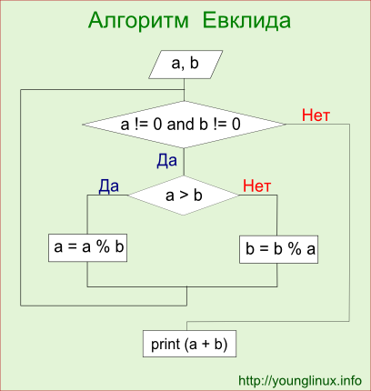

Алгоритм Евклида (нахождение наибольшего общего делителя)
Алгоритм Евклида – это алгоритм нахождения наибольшего общего делителя (НОД) пары целых чисел.
Наибольший общий делитель (НОД) – это число, которое делит без остатка два числа и делится само без остатка на любой другой делитель данных двух чисел. Проще говоря, это самое большое число, на которое можно без остатка разделить два числа, для которых ищется НОД.
Описание алгоритма нахождения НОД делением
- Большее число делим на меньшее.
- Если делится без остатка, то меньшее число и есть НОД (следует выйти из цикла).
- Если есть остаток, то большее число заменяем на остаток от деления.
- Переходим к пункту 1.
Пример:
Найти НОД для 30 и 18.
30/18 = 1 (остаток 12)
18/12 = 1 (остаток 6)
12/6 = 2 (остаток 0). Конец: НОД – это делитель. НОД (30, 18) = 6
Исходный код на Python
a = 50
b = 130
while a!=0 and b!=0:
if a > b:
a = a % b
else:
b = b % a
print (a+b) В цикле в a или b записывается остаток от деления. Когда остатка нет (мы не знаем в а он или b, поэтому проверяем оба условия), то цикл завершается. В конце выводится сумма a и b, т.к. мы не знаем, в какой переменной записан НОД, а в одной из них в любом случае 0, который на результат суммы никак не влияет.
Описание алгоритма нахождения НОД вычитанием
- Из большего числа вычитаем меньшее.
- Если получается 0, то значит, что числа равны друг другу и являются НОД (следует выйти из цикла).
- Если результат вычитания не равен 0, то большее число заменяем на результат вычитания.
- Переходим к пункту 1.
Пример:
Найти НОД для 30 и 18.
30 - 18 = 12
18 - 12 = 6
12 - 6 = 6
6 – 6 = 0 Конец: НОД – это уменьшаемое или вычитаемое. НОД (30, 18) = 6
Исходный код на Python
a = 50
b = 130
while a != b:
if a > b:
a = a - b
else:
b = b - a
print (a)Оформление кода в виде функции
def gcd(a,b):
while a != b:
if a > b:
a = a - b
else:
b = b - a
print (a)Блок-схема "Алгоритм Евклида"
